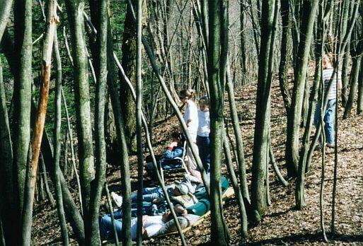

Things to do in the Spring
Recover

After a long Buffalo winter, most people welcome spring. Spring means the end of shoveling and the start of the warm weather. We most defiantly enjoy the cabin this time of year. There is no snow (most of the time) to deal with on the drive or to shovel.
The only bad thing about spring is the cleaning. Escape a weekend of spring cleaning and come to the chalet.
Don't forget, the hot tub is good year round!
Design by: Scott (scott@dickersonchalet.com)